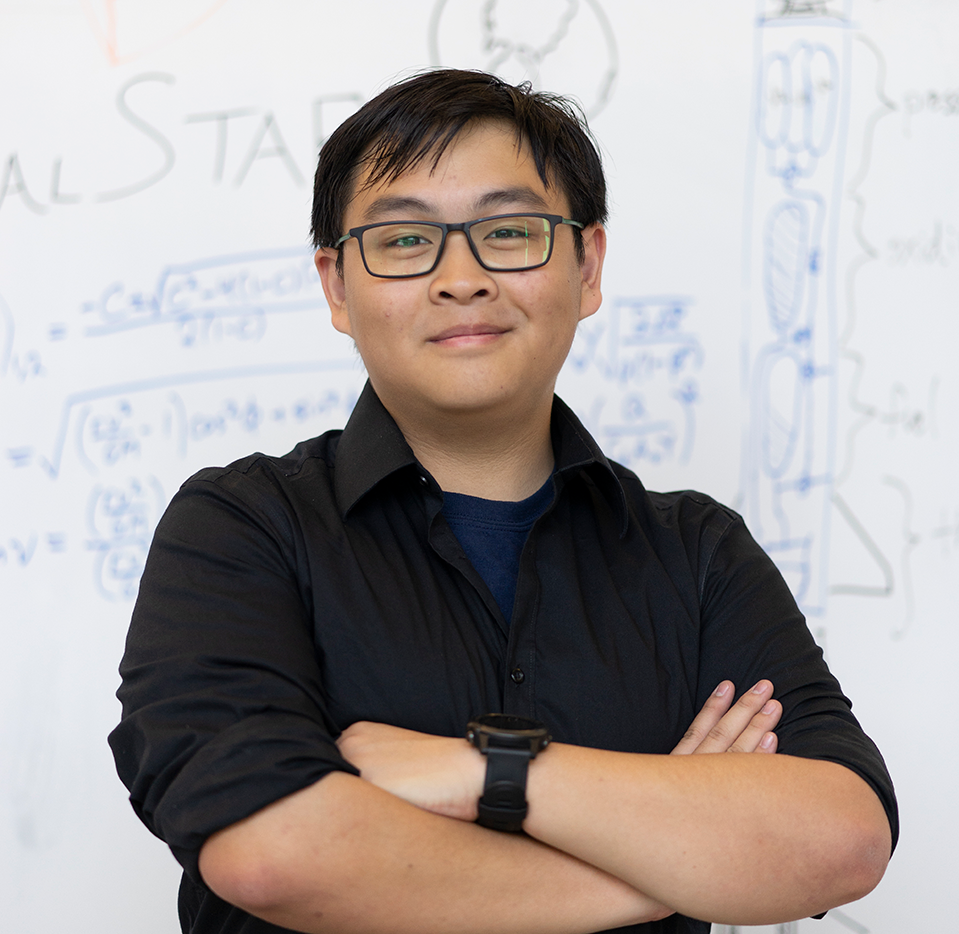
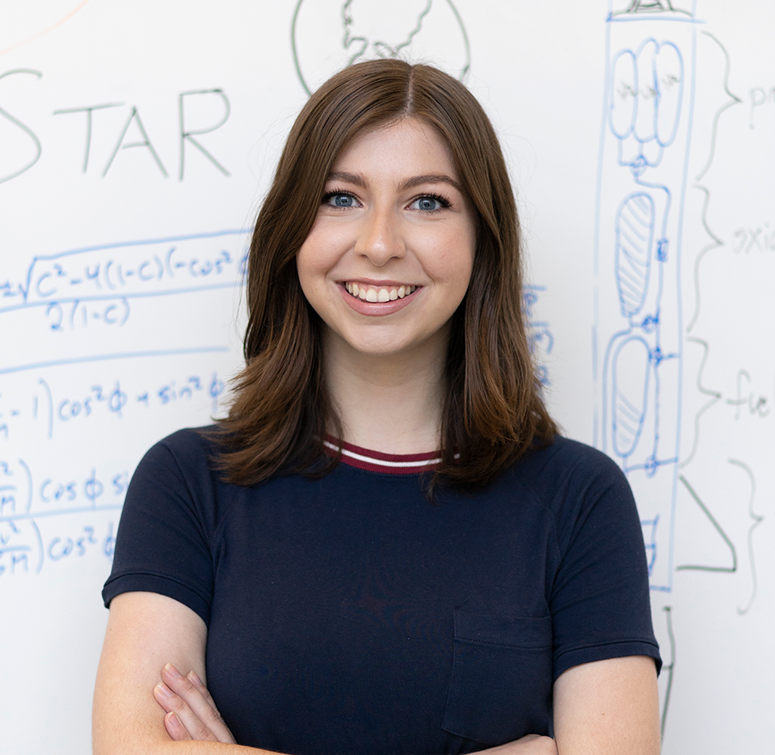
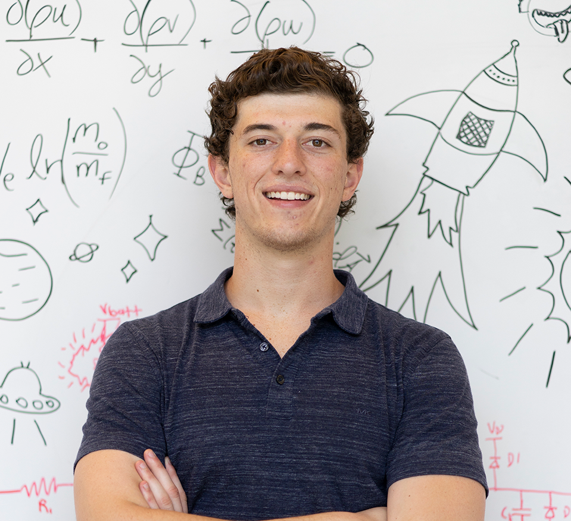

EXECUTIVE TEAM

Dinesh Parimi | President | EECS
I’m a junior in the EECS department who’s always believed in using engineering to tackle the big problems – and to me, nothing is bigger than making humanity an interplanetary species. Inspired by NASA documentaries in my high school physics class, I joined STAR as a freshman two years ago and haven’t looked back since.

Aaron Togelang | Vice President | MechE/MSE
Hi! I'm Aaron, the current Vice President. I'm currently in my third year, and I am majoring in both Mechanical Engineering and Material Science with a minor in EECS. I've been with the team since its founding and am involved in almost every aspect of the team. I learn CFD and graphic design with my spare time.

Jennifer Evans | Logistics | MechE
Hi, I'm Jennifer, a sophomore intended Mechanical Engineering and Astrophysics double major, and for essentially my whole life I've been incredibly passionate about space and drawn to the unknown of the universe. I enjoy planning ahead and view space travel as humanity's plan for the present and future, which makes STAR the perfect fit for me.

Michael Salamy | Business | MechE
I am a second year majoring in Mechanical Engineering and minoring in Structural Engineering. I joined CalSTAR in Fall 2017 because I have always been interested in aerospace engineering and I wanted to learn more about the subject in a very hands-on way, and because of the friendly and welcoming nature of the team members.